離開加時里風力發電廠及濟州馬體驗公園, 沿鹿山路一直朝東南的方向走。從濟州馬體驗公園開始, 馬路兩旁大部份的油菜花都已開了, 黃澄澄的, 十分漂亮, 總算看到黃澄澄油菜花的鹿山路, 拾回一些安慰。懸想當馬路兩旁櫻花怒放之時, 不難想像是一幅何等美絕的圖畫! 無奈今年濟州天嚴重反常, 令本來編排周密的鹿山路遠足計劃, 最後竟然看不到鹿山路春天最美麗的一面, 難免有白走一趟的感覺! 無奈! 無奈!


要開始加速走往巴士站 趕及搭乘 12:28 班次的巴士
也不知走了多, 突然想起是時候開始管理時間了! 望望前面, 仍然看不到鹿山路的盡頭, 我們現在究竟在什麼位置呢?
按計劃, 我們是在鹿山路南面出口的「가시리 」巴士站搭乘 12:28 班次的 720-1 號巴士返回表善里酒店。
我們約早上8:40從鹿山路北面的出入口出發, 步行了剛剛三小時才來到這裡。望望地圖, 接著粗略的量度距離, 至今共走了約四份三的路程。如果按現在的速度, 估計還要多走一小時才到達「가시리 」巴士站!
望望手錶, 約上午十一時四十分。算一算, 嚇了一跳! 現在離上車只有大約四十五分鐘! 換言之, 如果按現在的步行速度, 巴士將會在我們到達巴士站前的十五分鐘已經離開!
怎麼辦?
其實答案十分簡單, 而且只有一個。
要趕及搭乘 12:28 班次的 720-1 號巴士返回表善里酒店, 步速要比現時的快起碼四份一!

接著立即開始加快腳步。
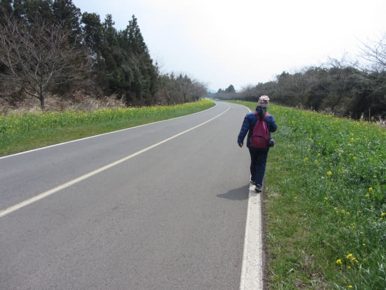
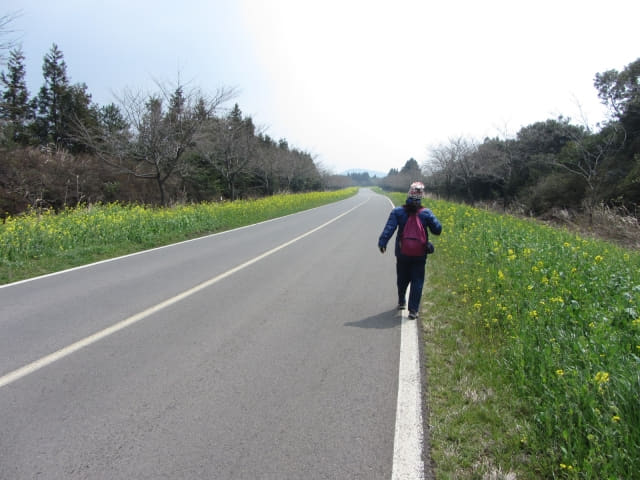
恐怕趕不及往巴士站, 我唯有追過了她, 改為由我走在前面, 由我控制步速。
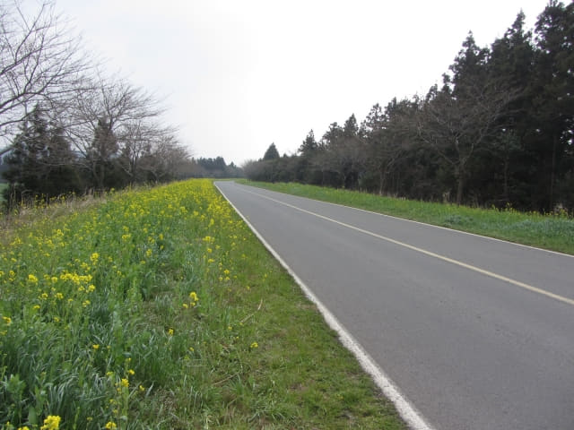
只管一直向前走。不時回頭望她。「喂~~~ 小烏龜, 快點, 好嗎?」
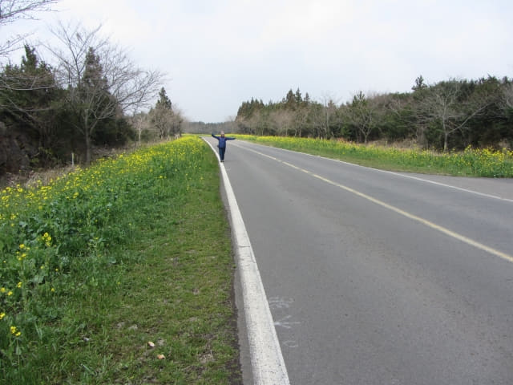
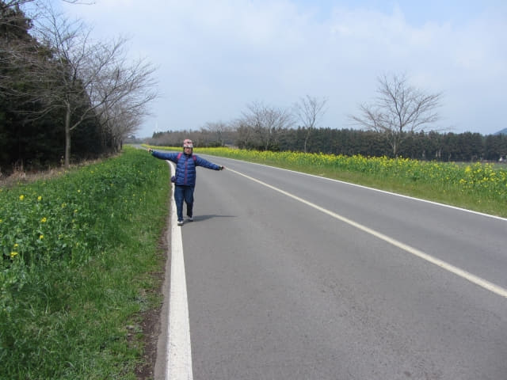
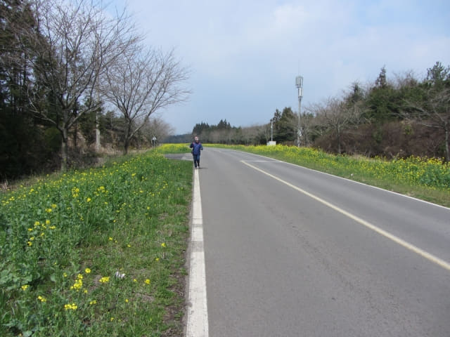
一直向前走呀~~ 走呀~~。
來到一條油菜花旁的行人步道, 隱約看見前面道路遠處有一點點灰色的房屋, 估計那裡應該是鹿山路的盡頭。看看手錶, 剛剛過了中午十二時, 心想應該可以趕及中午十二時半前抵達加時里十字路口, 現在擔心是不知道巴士站的位置。
看見她走到氣喘喘的, 而時間也應該追回了, 便再改為由她走在前面。
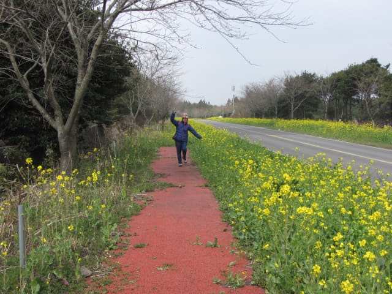
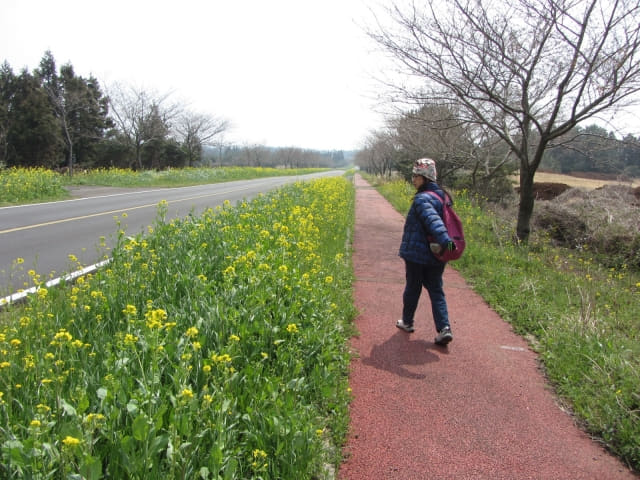
開始看見有汽車停在路旁, 人們都走出車外欣賞風景。知道離加時里十字路口不遠了!
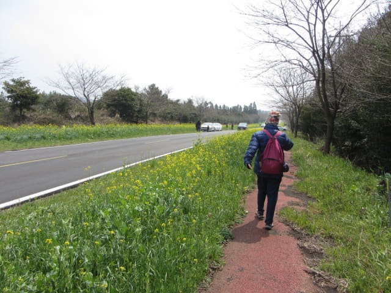
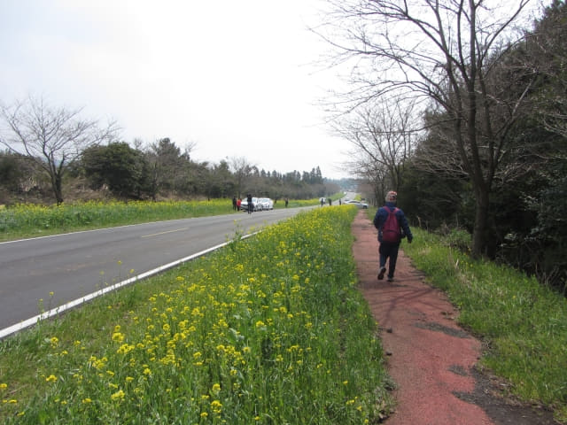
鹿山路加時里 (가시리 Gasi-ri)南面出入口
終於來到加時里鹿山路南面的出入口, 剛好把整條鹿山路由北至南走了一次。滿足嗎? No! 看不到真正的「濟州島春天最美麗道路」, 那會滿足!
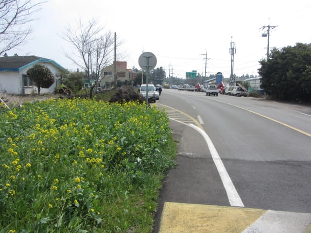
走得那麼辛苦, 離開前再和鹿山路拍照, 相信再來的機會是接近「零」。
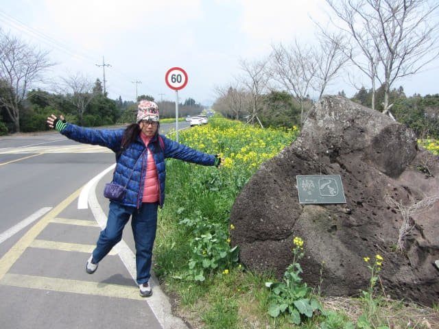
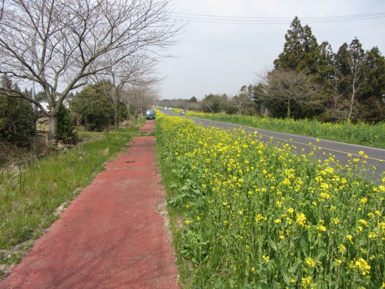
看看手錶, 時間約十二時十五分, 離上車約有十三分鐘。按地圖所示, 還要走一小段路才到達加時里十字路口, 而巴士站應該就在路口附近。
加時里十字路口
離開鹿山路, 繼續往前走了一會, 迎面是一個交通繁忙的十字路口, 這裡應該是加時里十字路口了。但巴士站在那裡? 開始心急起來了!
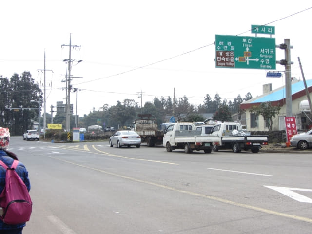
繼續往前走, 來到路口, 馬路中心有一個迴旋處。所謂迴旋處, 其實是一株很大的樹, 不知有什麼歷史, 生長在路中仍然可以保留下來。可惜沒有時間, 否則走到樹下看看。
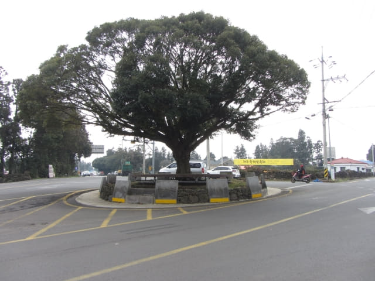
加時里十字路口巴士站
望望左邊, 「가시리 」巴士站就在路口! 真想不到那麼容易便找到巴士站, 開心得跳起來! 如果人生都那麼順利便好了, 只可惜每次都剛剛相反!
望望手錶, 約中午十二時二十分, 還可以趕及搭乘 12:28 班次的 720-1 號巴士返回表善里酒店, 緊張的心情頓時鬆下來。這時心臟仍然「呯呯、呯呯、呯呯…..」的急速跳動, 坐下來休息吧!
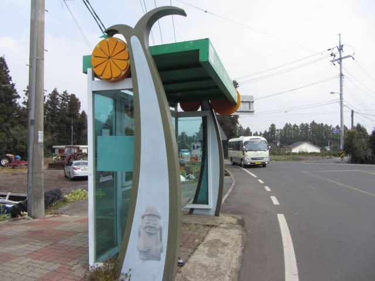
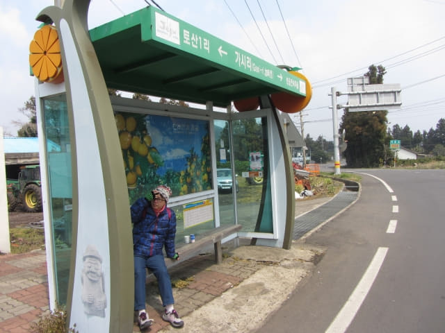